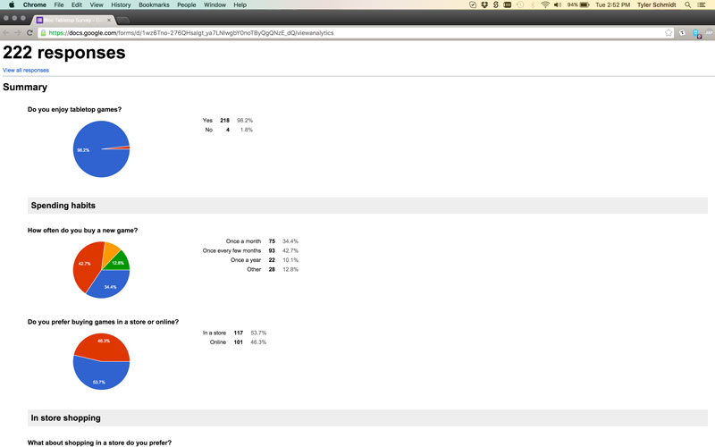
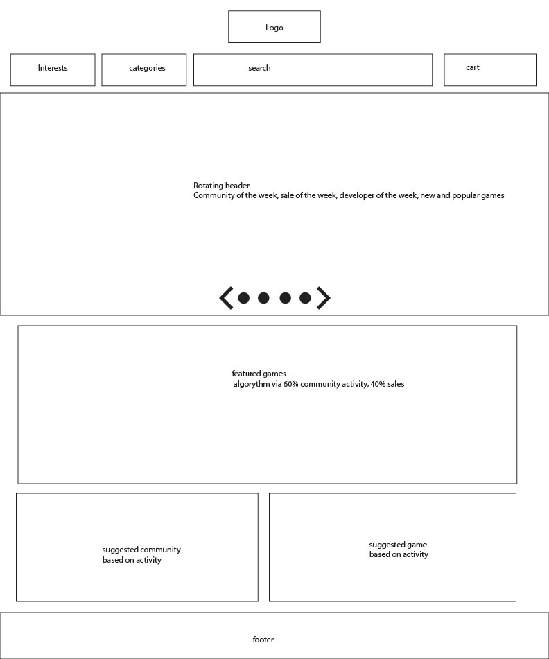
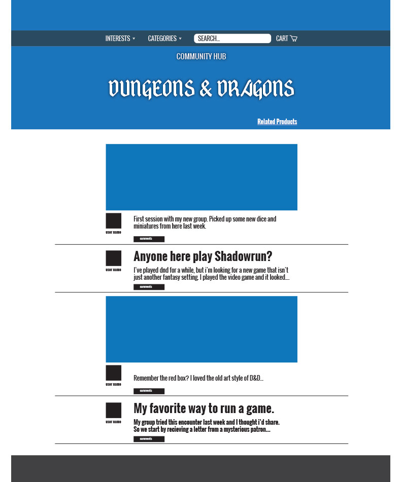
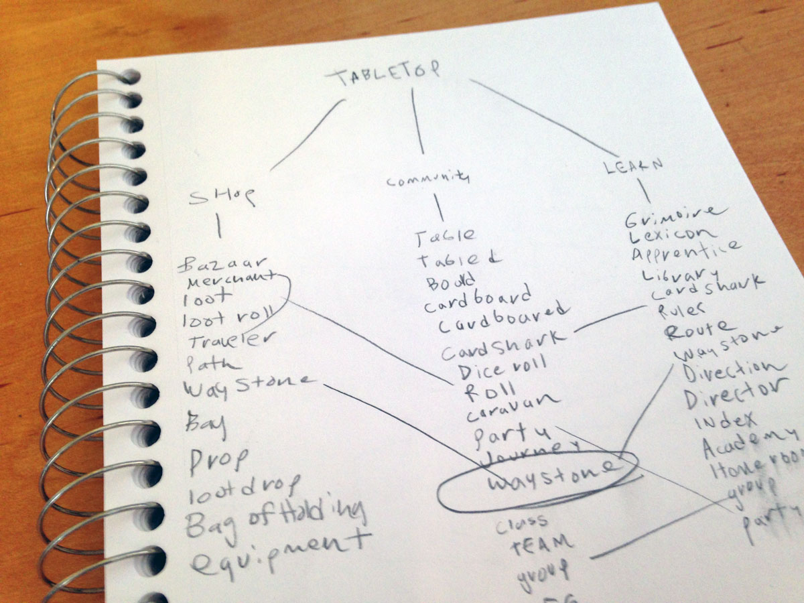
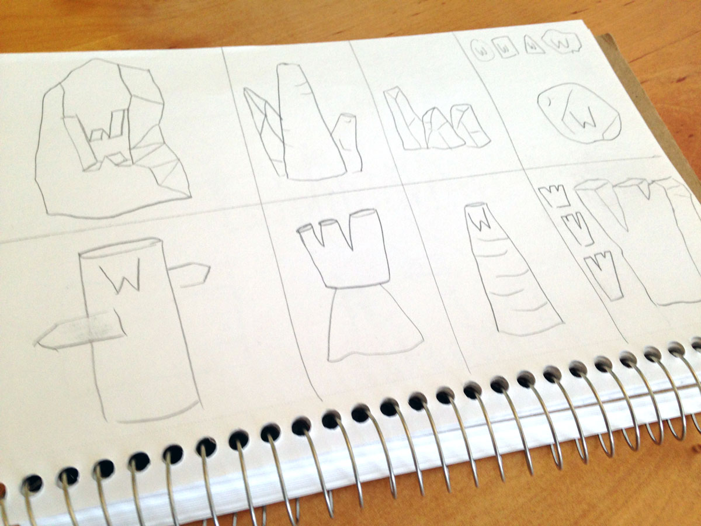
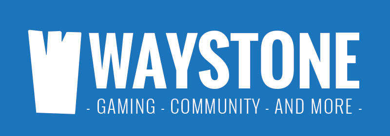
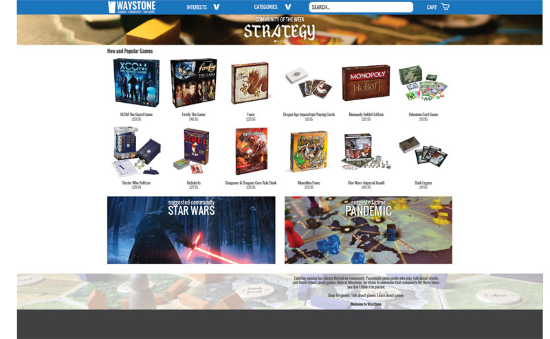
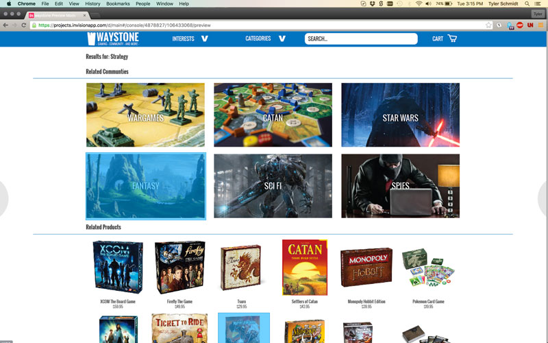
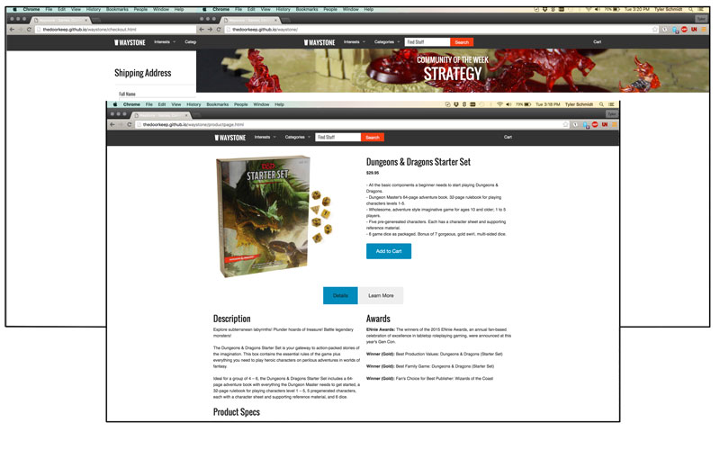

SUMMARY
This was my Capstone Project for Bloc, and I wanted to incorperate my love of tabletop gaming while addressing the many problems that exist for online board game sites.
PROBLEM
Board game sites by and large are frankly not that great. The site closest to what I wanted to create is boardgamegeek.com which has a very dated ui and works through a forum system. Most other sites are simple ecommerce stores and do nothing to replicate the community aspect that local game stores thrive on. This is also a reason why many gamers prefer to shop in person.
PROCESS
The first part of undertaking this project was to understand what the users were looking for in an online store. To do this I created an online survey with the goal of understanding where gamers shopped, and what is necessary to them in their shopping experience.
I gathered over 200 responses from the survey I sent out, and from that data I was able to generate some user personas to create user categories. From those personas, I generated user stories and user flows to determine all the aspects of the website I needed to include image of results.
From these results, I gathered that more players prefer to shop in stores, so my goal was to replicate the friendly local game store aspect of physical stores and put it in an online format.
WIREFRAMING
From my user flows, I determined all the features necessary for the website, and from that created low fidelity wireframes. These simple wireframes were a large impact on all following parts of design.
From these early wireframes, I translated them into higher fidelity wireframes.
BRAND IDENTITY
At this time I wanted to establish the branding for the app. This included determining the name, color pallete, typeface, and logo. The first and most challenging aspect was to settle on a name. This process took me some time and several sheets of notebook paper filled with random words.
I eventually came to the name Waystone while reading a book. In the book, along with several others, waystones were large markers on trails where people would stop for the day and gather. They would sell their wares, sit around the fire and tell stories, and grow as a community. I felt this sentiment was exactly what I was looking for with my website and had the added benefit of a nerdy feel.
From deciding the name, I sketched several ideas and possibilities of the logo.
Eventually deciding on the final logo helped determine the color pallete, as well as the typeface.
MOCKUPS
After establishing the brand identity, I began to apply the brand styling to the wireframes.
From these finalized mock ups, I was able to translate it to an initial prototype in invision. This was made to survey the usability before I dove into code.
EXECUTION
This was my first project where I really dove headfirst into coding the entire project. For it, I used the foundation framework to provide a library of code to use and keep the website looking professional.
Click Here for a working version of the site.
CONCLUSION
This project was an incredible challenge for me but was also a very fun experience. Pushing forward with code, doing more user research, and responsive design, this project pushed every aspect of my design skills.